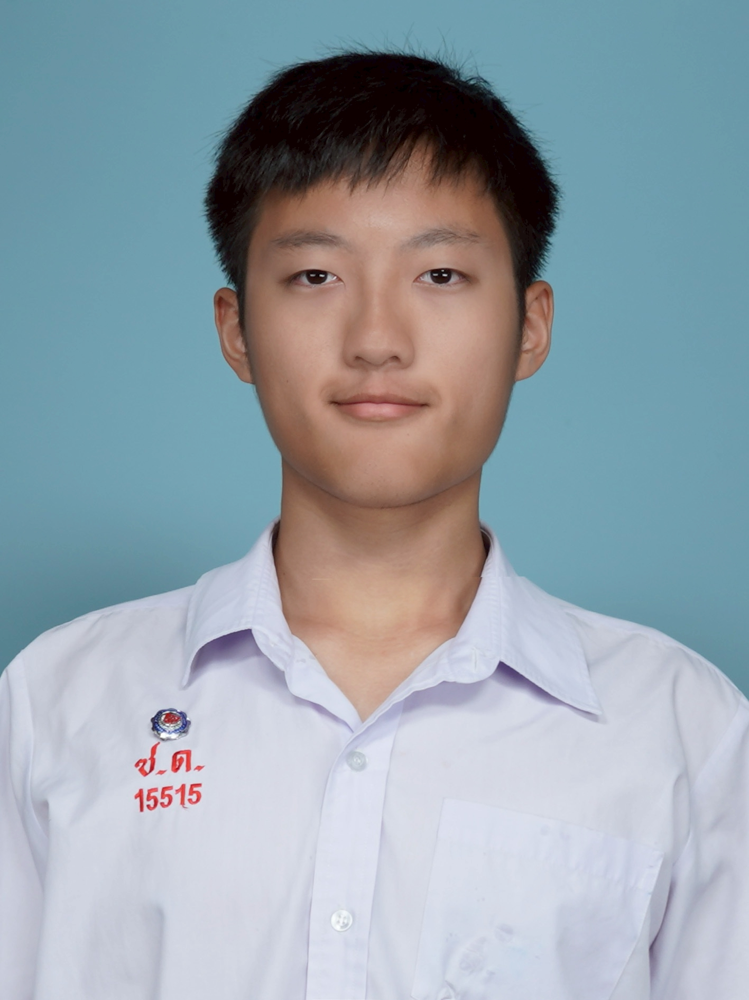
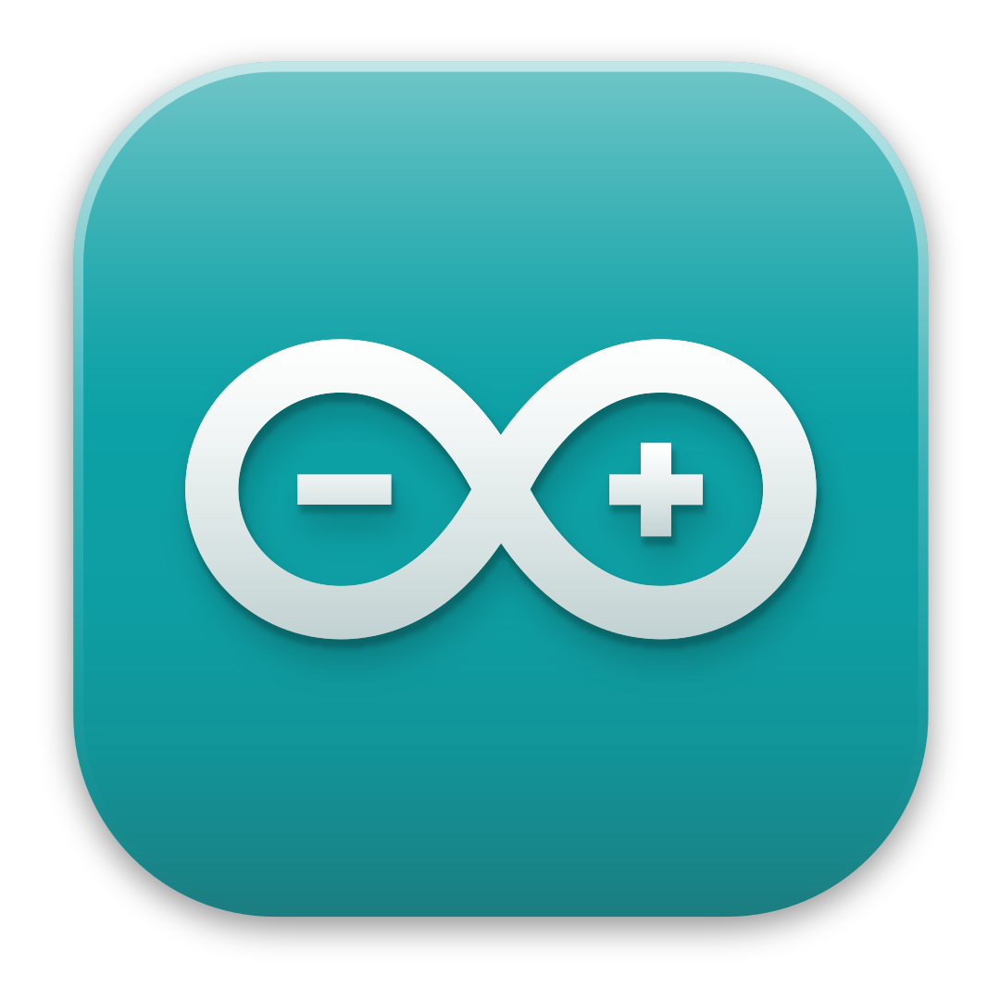
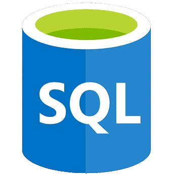
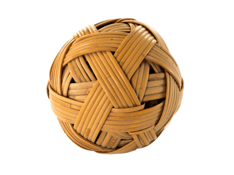
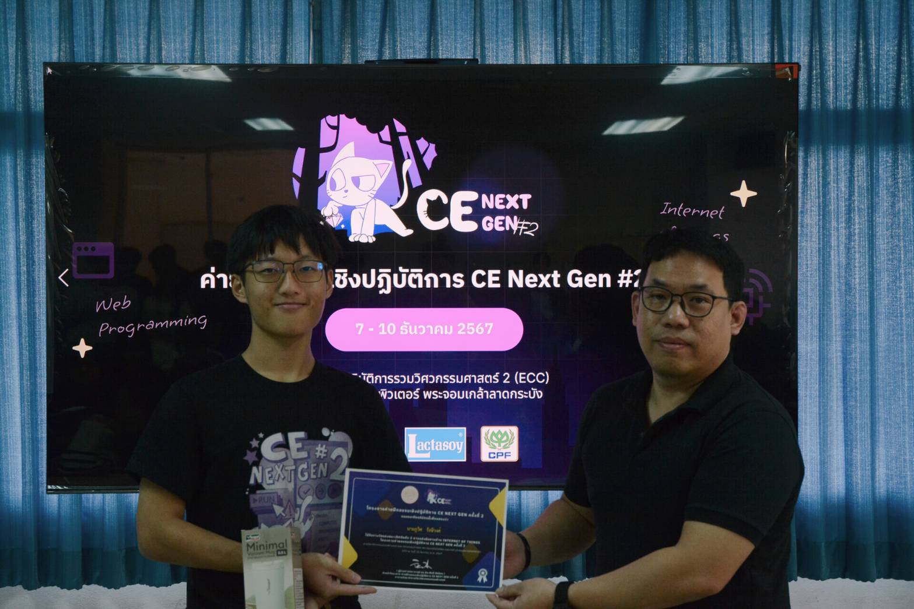
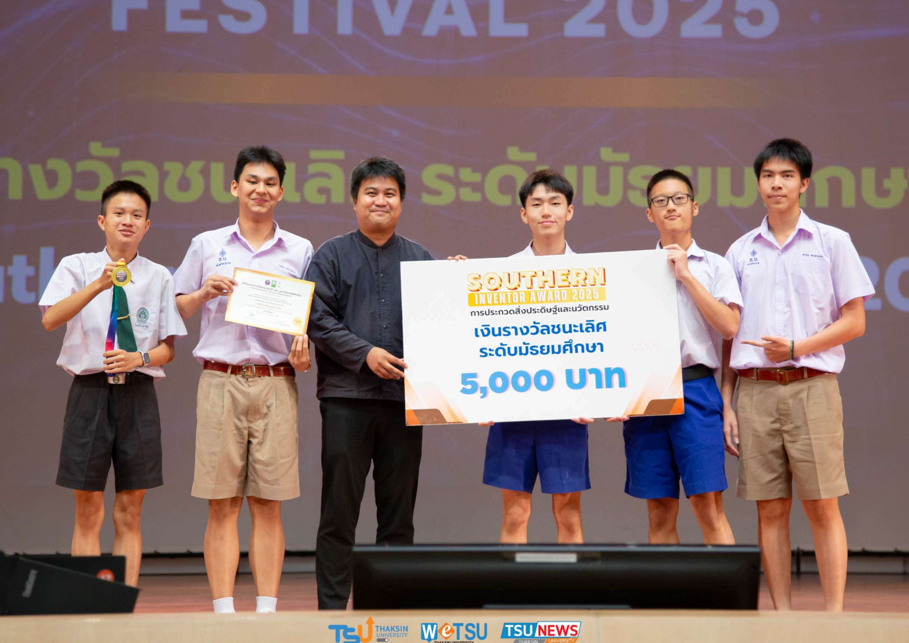

Puwit Rangsiwong
My Skills
- C++
- Python
- SQL



Puwit Rangsiwong
Hobbies
- 3D Print
- Takro



Project
Detail
รองชนะเลิศอันดับ 2 กิจกรรมค่าย CE Next Gen 2
ค่ายนี้เป็นค่าย ที่ทำให้ผมชื่นชอบ วิศวะคอม ลาดกระบัง เพราะ
รุ่นพี่ที่เป็นกันเองคอยตอบคำถามแม้จะจบค่ายไปแล้ว รวมถึงประสบการณ์นั่งรถไฟครั้งแรก
ค่ายนี้ทำให้ผมได้เรียนรู้การทำอุปกรณ์ IOT และ ได้สร้างรถบังคับ ที่สามารถควบคุมได้จากทั้ง
dashboard และ remote ที่สร้างจาก ESP32
Learning
node red : ใช้สร้าง Dashboard ในการทำปุ่มควบคุม และ GUI แสดงผลข้อมูลได้
mqttx : ใช้ทดลอง รับ-ส่ง payload ตาม Topic ด้วย wifi
ESP32 : ได้เรียนรู้การทำ Debounce switch และการใช้ Sensor ควบคู่กับ Wifi
Role
- นำเสนอหลักการทำงาน
- เขียนโปรแกรม C++

Competition
Detail
ผมได้รับรางวัลชนะเลิศ เหรียญทอง ในหมวดการเกษตรและอุตสาหกรรมการเกษตร พร้อมเงินรางวัล 5,000 บาท จากการประดิษฐ์และพัฒนาเครื่องเลี้ยงไข่ผำด้วยระบบอัตโนมัติอัจฉริยะ
โดยระบบของผมสามารถแสดงข้อมูลจากแปลงปลูก เช่น อุณหภูมิน้ำ ความชื้น คุณภาพน้ำ และความเข้มแสง ผ่าน Dashboard ได้ทั้งบนคอมพิวเตอร์และโทรศัพท์มือถือ
อีกทั้งยังสามารถควบคุมปั๊มน้ำให้สร้างน้ำวนเพื่อเพิ่มออกซิเจนในแปลงปลูกตามเวลาที่กำหนด หรือ เติมน้ำในแปลงเมือระดับน้ำต่ำเกินไป และมีระบบกรองไข่ผำที่ตายแล้วเพื่อนำไปแปรรูปเป็นปุ๋ย
Learning
OpenCV : ใช้ฝึกโมเดลกล้องเพื่อตรวจสอบว่าไข่ผำใกล้สุกหรือยัง
Node-RED Mobile : ใช้แสดง Dashboard บนโทรศัพท์มือถือ และปรับแต่งด้วย CSS เพื่อเพิ่มความน่าใช้งาน
C++ และไฟฟ้า : ได้ออกแบบวงจรภายในตู้ควบคุม และเขียนโปรแกรมให้เซนเซอร์หลายตัวทำงานพร้อมกันโดยใช้ millis()
Role
- ออกแบบวงจรอิเล็กทรอนิกส์
- ออกแบบและพรีเซนต์หน้าตาแอปพลิเคชัน
- เขียนโปรแกรมภาษา C++ เพื่อควบคุมการทำงานของระบบ
- พัฒนา Dashboard สำหรับแสดงผลข้อมูล